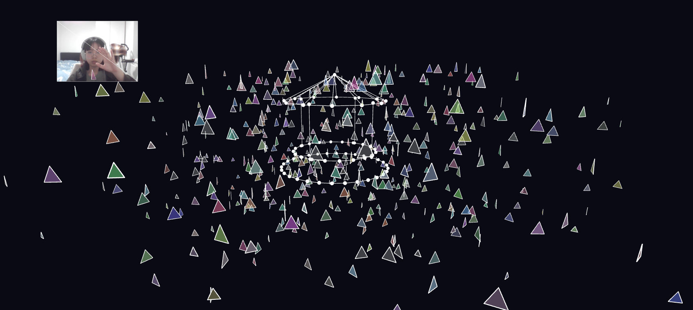

Project Link: View Interactive Sketch
Dreamwalking Parade is an interactive generative artwork developed using p5.js that explores the unstable boundary between dreams and reality. Inspired by the parade sequence in Paprika (2006), the project simulates a continuously expanding system of “dream fragments” that replicate, and gradually overwhelm the canvas, representing reality space, but eventually disappear. The experience unfolds as a staged interactive sequence. At the beginning, a rotating music box plays a lullaby, representing the transitional moment before sleep. Users can then trigger dream fragments through mouse clicks and hand gestures, each interaction generating visual fragments alongside recorded monosyllabic tones within the system. As these fragments accumulate, the system enters a critical threshold and collapses: the screen flashes, fragments erupt uncontrollably, and the previously recorded tones are replayed in looping, glitch-like patterns. In the final state, only a few isolated “reality fragments” remain, creating a sense of emptiness after the collapse. Users can interact with the system by spawning fragments through mouse input and hand gesture, triggering a recursive growth of dream fragments. As fragments accumulate, the system transitions into a collapse state, accompanied by changes in sound behavior. The work aims to create an immersive and slightly uncomfortable experience.
The project was built using JavaScript and the p5.js library, incorporating several core concepts from the course, including recursion, emergence, sound and gesture control. A global system tracks the number of fragments and triggers a “collapse” state once a threshold is reached. This introduces a temporal dimension, where the system evolves from controlled growth to instability. WEBGL was used to build a 3 dimensional view of the project, and sound was implemented using p5.sound, with oscillators generating tones that respond dynamically to system states, together to increase the imersion of experience. Additional techniques include rotational transformations and interaction-driven spawning. External references included documentation from the p5.js library and examples of generative systems using recursion and particle-like behaviors. All borrowed techniques are documented within the source code.
This project explores the idea of uncontrollable expansion within digital and psychological systems. Drawing from Paprika, where dreams invade reality through an unstoppable parade of objects and symbols, Dreamwalking Parade reflects on how internal states, such as memory, desire, or anxiety, can proliferate beyond control. Among its possible interpretations, the work can also be read as a metaphor in which dream fragments resemble units of online information and reality parallels the human mind, suggesting a form of cognitive invasion shaped by the continuous influx of digital content. Critically, the work questions the illusion of stability in computational systems, where seemingly controlled structures can become unstable through recursive growth and ultimately collapse. By linking this process to broader concerns such as information overload and algorithmic escalation, the project reflects on how complexity emerges from simple rules and exceeds control, aligning with my interest in immersive interactive media and the representation of psychological states.
